Sander Hoogendoorn
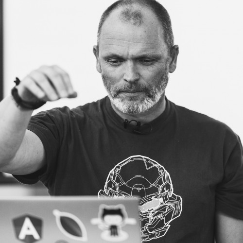
Faster, smaller, shorter, flatter. The future of software development
Пропагандирует скрам/аджайл/конбан:
- Не надо делать то, что сейчас не нужно
- Циклы разработки должны быть короткими
- Нет спринтам! Планирование - трата времени
- Цикл разработки должен быть непрерывным
- Команды должны быть маленькими, внутри команды должно быть тесное общение и встречи (стендапы) для таких команд не нужны
- Самоорганизующиеся микрокоманды
- Не делайте проекты! ©
Валерий Бурмистров
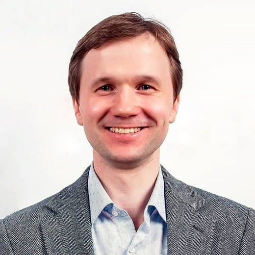
Тестирование - вчера, сегодня и в 2025
Director QA, TeamViewer GmbH
- 15 лет в индустрии
- Работал и в России, и в Силиконовой Долине
- Сейчас живет и работает в Германии
Текущие тренды
- более частые релизы
- нет времени на неэффективность
- тенденция к слиянию тестирования и разработки
- лучшие QA-инженеры и тестируют, и пишут код
- тест-менеджер улучшает практики разработки и внедряет их
- open-source? де-консолизация?
- образование для QA - оnline
- ужесточение стандартов для QA (ISTQB и т.д. слабоваты)
- новый разработки - новая ответственность
- цена ошибки возрастет
- много внимание безопасности
- переосмысление: мониторинги и будут сутью тестирования
- и т.д.
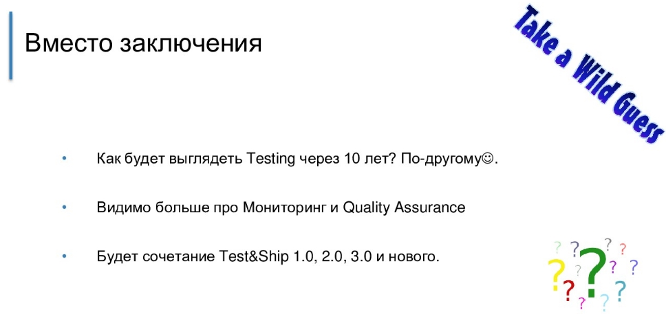
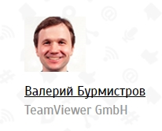
Puneet Khanduri &
Prashant Khanduri
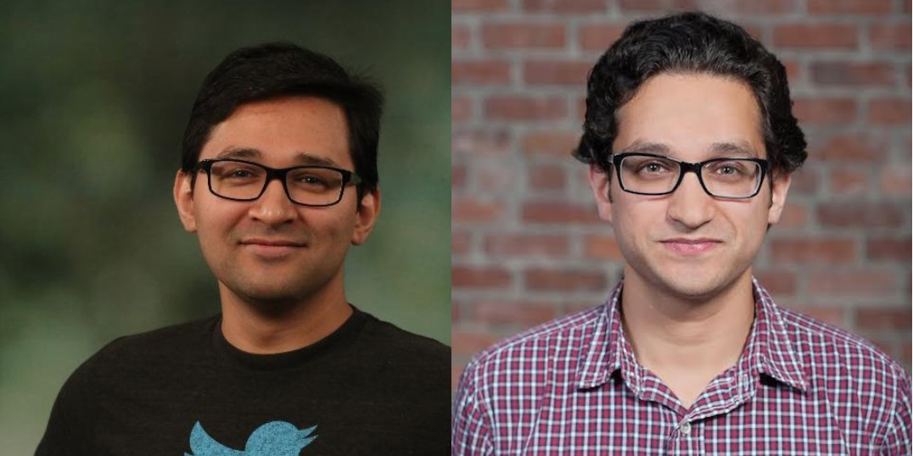
Diffy : The last line of defence
Twitter & OpenDiffy
Diffy
- позволяет посмотреть не будет ли новая версия кода в облаке НЕ хуже
- это продукт для тестирования существующего кода
- позволяет выявлять и убирать шумы в запросах/ответах
- в диффи копируется часть трафика с прода старого кода и новый код
- подходит для регресса и тестирования нового кода с его влиянием на всю системы в целом
- open source
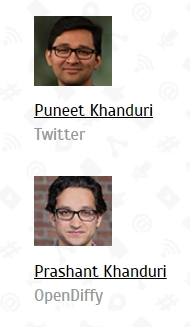
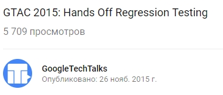
Jan Jaap Cannegieter
Groupwise testing: bug hunts and test mobs
Principal Consultant, Squerist
- 20 лет в тестировании
- Отвечает за управлением процесса тестирвоания
- Пишет статьи и книгу по тестированию
Флешмобы в тестировании
- люди приходят в определенное место, в определенное время и делают одно и тоже
- толпа, делающая одно и тоже выглядит лучше одного человека - это удовольствие
- выделяют: багхант и тестмоб
- багхант - разведочное тестирование с целью выявления багов и уязвимостей вне планирования и подготовки
Багхант
- в тест-сессии багханта участвуют пользователи, разработчики, тестировщики, руководители
- люди бьются на группы по 1-2 человека и рассаживаются за устройства
- каждая команда смотрит свою часть продукта
- команду надо настраивать перед началом - 30-40 минут
- сессия длится 120-240 минут
- не передаем приложение со словами "вот - тестируйте" - встречу сопровождает "ведущий"
- в качестве помощи - тест-чарторы (мапки, таблицы и т.д.)
- введение эффекта соревнования увеличивает заинтересованность
- печеньки!
Тестмоб
- группа специалистов, которые раобтают в одно время, в одном месте, за одним компьютером
- роли: драйвер (сидит за компьютером), навигатор (говорить что делать драйверу), исследователь (записывает баги)
- драйвер меняется каждые 15-20 минут
- 6 человек
- остановка каждые 30 минут - подведение результатов
- в качестве помощи - тест-чарторы (мапки, таблицы и т.д.), план тестирования
- печеньки!
Несколько видов тестирования по наполнению участников:
- тестирование с менеджерами (и реальными пользователями)
- end-to-end моб - проверять отдельные куски системы (никто не видит систему полностью!)
- только разработчик и тестировщик
Что надо для моба:
- Среда (должно работать все, в т.ч. ПО)
- Люди
- Администраторы для отслеживания выполнения мобы/ханта
- Время
- Организация
- Разбор результатов
- Печеньки!
- Энергия!
- Желание развивать и двигать проект вперед
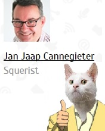
Михаил Косыхин
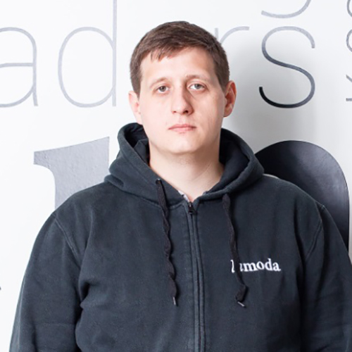
Тестирование производительности для бизнес событий (Black Friday)
QA Head, Lamoda
- Начинал как ручной тестировщик в Amphora
- Был тимлид в Luxoft с Deutsche Bank
- Тест-менеджер в Raiffeisen
- С нуля поднимал QA в стартапе CarPrice как рук. отдела
- Сейчас QA Head в Lamoda
- В тестировании больше 10 лет
- ЛаМода - больше, чем видно
- Готовились к черной пятнице 3 месяца, давали реальную нагрузку, нашли и исправили много уязвимостей и узких мест
- Перед черной пятницей прогнали все нагрузочные тесты, все тесты прошли
- Итог - много человек вызваны на работу, хотфиксы, паника
- Все начали заново
- Изучили все логи, выделили классы эквивалентности (120+ классов на сайт и 90+ на мобилках - значимые от >0,05% от всех запросов (0,05% - это десятки тысяч в сутки)), выявили важные запроса (как покупка)
- На нагрузку влияет все: профиль пользователя (старый/новый), акции, купоны, количество заказов, спец.скидки и поведение пользователя (надо его знать)
- Тестировать на тестовой среде или проде? На проде
- Профессионалы магическим образом рассчитывают нагрузку на сервис на черную пятницу и всегда выдают верный расчет (но запас накидывается)
- Команда подстраивается на новый темп и манеру тестирования
- Подготовка началась за 6 месяцев: учитывается загруженность команды, сроки на покупки нового железа и на план Б
- Договоры с бизнесом: не релизить новые фичи перед пятницей, которые могут усугубить работу сервиса
И на всякий случай готовили:
- скрипты для тестов отдельных приложений
- дежурство во время событий
- дополнительный генератор нагрузки
Игорь Гольдшмидт
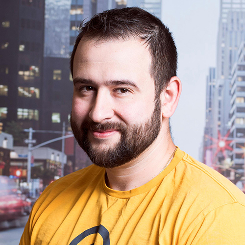
Как не надо тестировать мобильное приложение
QA Engineer, Gett (GetTaxi)
- В тестировании с 2013 года
- Работал в AVG
- 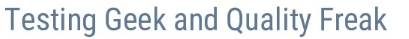
Решение - использовать fullstack подход
- 1 шаг - осознание кросс-системных фич
- 2 шаг - fullstack - автотетсты на всех уровнях и во всех микросервисах
- + тестирование UX|UI
- + тестирование мобилок
- - это все помогает бороться с "дырами" в знаниях и тестовом покрытии
- позволяет тестировать двойную интеграцию
- помогает оптимизировать покрытие
- 3 шаг - управление рисками: статистика и анализ + контроль выпускаемых версий
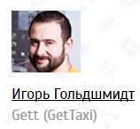
Денис Трифонов
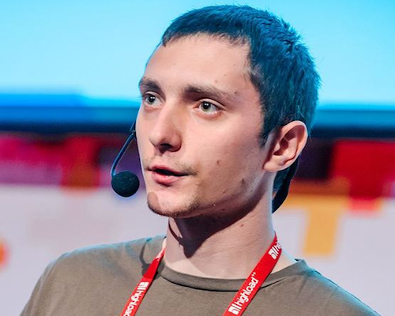
Как мы непрерывно тестируем производительность 30 проектов
Специалист по тестированию производительности, 2ГИС
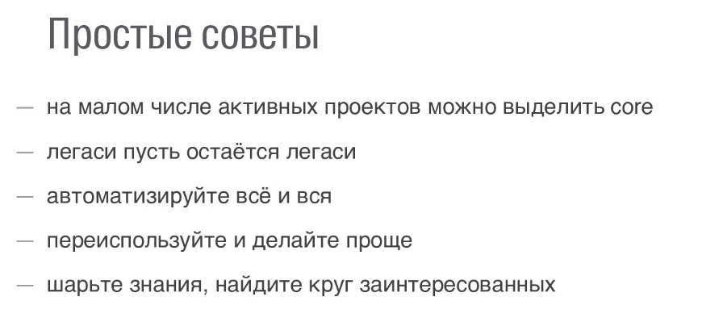
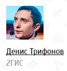
Алексей Чурбанов
Как автоматизация помогает тестировать совместимость
Руководитель группы тестирования, Лаборатория Касперского
- в тестировании с 2012 года
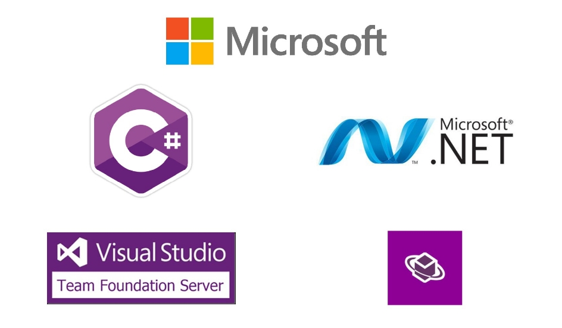
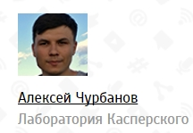
Rajdeep Varma
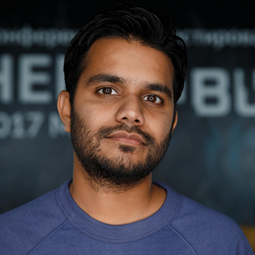
Application Backdoor via Appium
Sr. Automation QA, Badoo
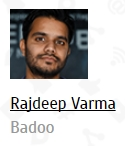
Марина Ремнева
Как приручить деплой?
Senior QA Engineer, Wrike
- в тестировании с 2011 года
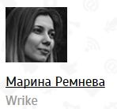